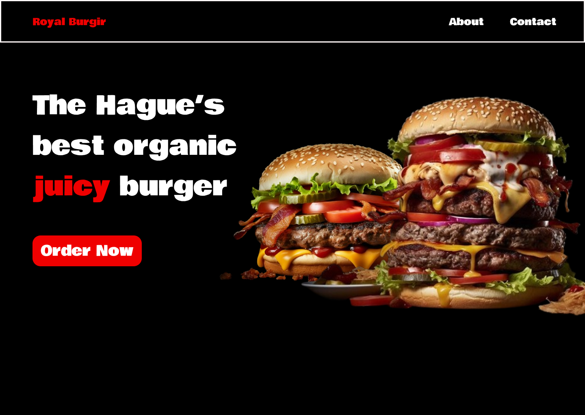
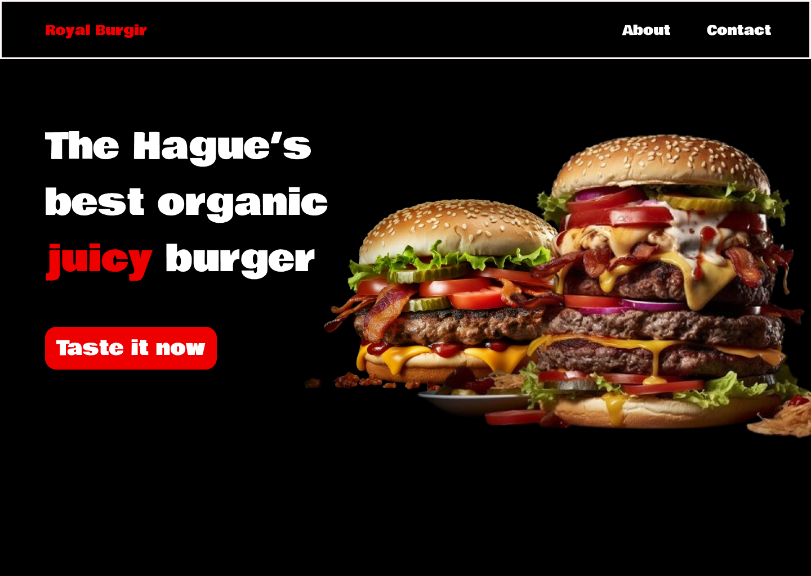

Proving a hypothesis through a research prototype
In this prototype project I have decided to investigate the Goal-Gradient Effect law, which states that the tendency to approach a goal increases with the proximity of it to the user. With that said, I proceeded to investigate it with a fast food restaurants websites hero section, with the only difference being the order button.
Version A has a button that says Order now, its focused more on the utility and its straight forward in meaning. Whereas Version B has a ‘’Taste it now’’ button which is meant to ‘’bring’’ the emotional experience of eating a burger closer to the user, although in practice he still must order it after pressing.


According to my hypothesis based on the goal gradient effect law, the version B would be more attractive to the users and hence they would press it faster than the version A, due to the wording of the button that creates the feeling of already being able to eat the burger. Whereas the other button still implies in a straight forward way that he still has a long way before he gets to eat it.
My hypothesis turned out to be right as the users saw the button that was triggering their emotions and desire for food as more attractive. The users thought out loud as I encouraged them to do so and the reactions I discovered was that they would get a instant desire to press on B version with expressions like ‘’mmm I wanna taste it’’. Whereas the version A had them behave in a more generic way without any expressions characteristic of excitement.